Un thème de l'épreuve d'optique géométrique et physique (OGP) (U42, coefficient 3) du BTS Opticien-Lunetier. Il est tombé à 6 des 7 sessions analysées. Sur cette page : 6 définitions à savoir et 3 questions corrigées.
Écriture qui donne f'1, l'écart e = O1O2 et f'2 comme multiples d'une même longueur a : f'1 = m·a, e = n·a, f'2 = p·a.
À savoir par cœur
Doublet achromatique
★ Tombée en 2019
Utilisée dans le sujet 2021
Association d'une lentille convergente et d'une divergente, taillées dans deux verres de dispersions différentes, qui a la même focale pour deux couleurs.
Pour comprendre : Lentilles accolées : V = V1 + V2 et V1/ν1 + V2/ν2 = 0.
À savoir par cœur
Dispersion
Probable
Utilisée dans le sujet 2019
Variation de l'indice d'un verre avec la longueur d'onde : le bleu est plus dévié que le rouge.
Pour comprendre : Elle décompose la lumière blanche et crée l'aberration chromatique.
Nombre d'Abbe (constringence)
Probable
Utilisée dans le sujet 2019
Nombre qui caractérise la dispersion d'un verre : ν = (nd − 1) / (nF − nC).
Pour comprendre : Plus ν est grand, moins le verre disperse les couleurs.
Verre ED
Probable
Utilisée dans les sujets 2019, 2022
Verre à très faible dispersion (« Extra low Dispersion »), donc à nombre d'Abbe élevé. Il sert à réduire l'aberration chromatique des objectifs.
Aberration chromatique
Probable
Utilisée dans les sujets 2021, 2022
Défaut d'image dû à la dispersion : chaque couleur a son propre foyer, l'image présente des bords irisés.
Pour comprendre : On la corrige avec un doublet achromatique ou des verres ED.
Trois questions corrigées
Cherche d'abord ta réponse, puis ouvre la correction.
Type BTS 2026 · Niveau facile
Un téléobjectif associe une lentille convergente puis une divergente. Quel est son principal intérêt par rapport à une lentille unique de même focale ?
Il supprime la diffraction
Il redresse l'image
Il donne une image plus lumineuse
Il est plus court : la distance 1re lentille → foyer image est inférieure à la focale
Voir la correction de la question 1
Réponse D. Il est plus court : la distance 1re lentille → foyer image est inférieure à la focale
Le plan principal image est rejeté en avant de la première lentille. On obtient une grande focale f' dans un tube nettement plus court que f' : c'est tout l'intérêt du téléobjectif, il est moins encombrant.
Type BTS 2025 · Niveau moyen
Un oculaire est formé de deux lentilles minces convergentes de f'1 = f'2 = 40 mm, séparées de e = 30 mm. Quelle est sa distance focale image ?
20 mm
32 mm
40 mm
80 mm
Voir la correction de la question 2
Réponse B. 32 mm
Formule du doublet : f' = f'1 × f'2 / (f'1 + f'2 − e) = 40 × 40 / (40 + 40 − 30) = 1 600 / 50 = 32 mm. (Ou en vergences : V = V1 + V2 − e·V1·V2.)

Type BTS 2025 et 2026 · Niveau moyen · Calcul
Doublet de deux lentilles minces : f'1 = 60 mm, f'2 = 30 mm, séparées de e = 40 mm. Calcule sa distance focale image f'.
Réponse attendue en mm, arrondie à l'unité, avec son signe.
Voir la correction de la question 3
Réponse : +36 mm.
Formule de Gullstrand : f' = f'1 × f'2f'1 + f'2 − e(f'1 × f'2) sur (f'1 + f'2 − e)f' = 60 × 3060 + 30 − 40(60 × 30) sur (60 + 30 − 40)= 1 80050(1 800) sur 50 = 36 mmLe doublet a une distance focale image de 36 mm.
Le QCM compte 6 questions sur ce thème. Chacune est corrigée et expliquée, et celles que tu rates reviennent toutes seules à 1, 3, 7, 14 et 30 jours.